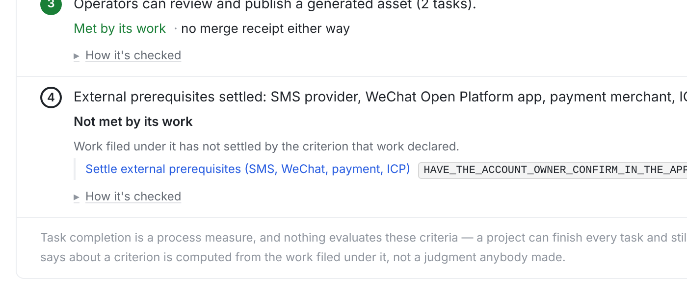
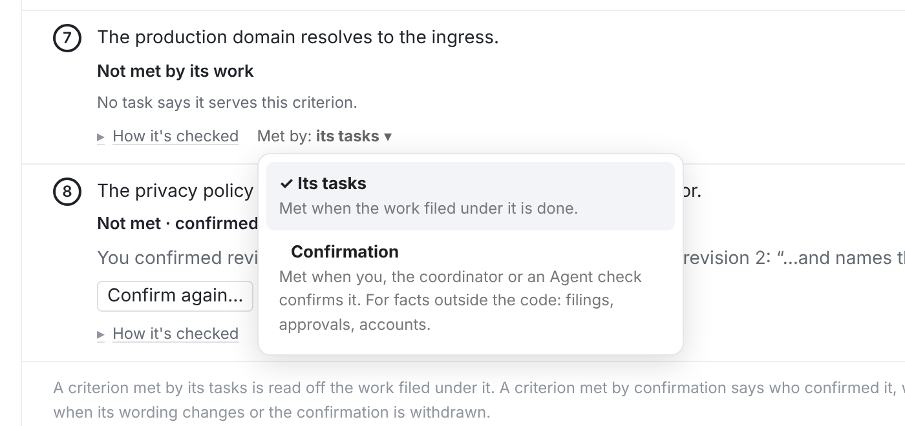
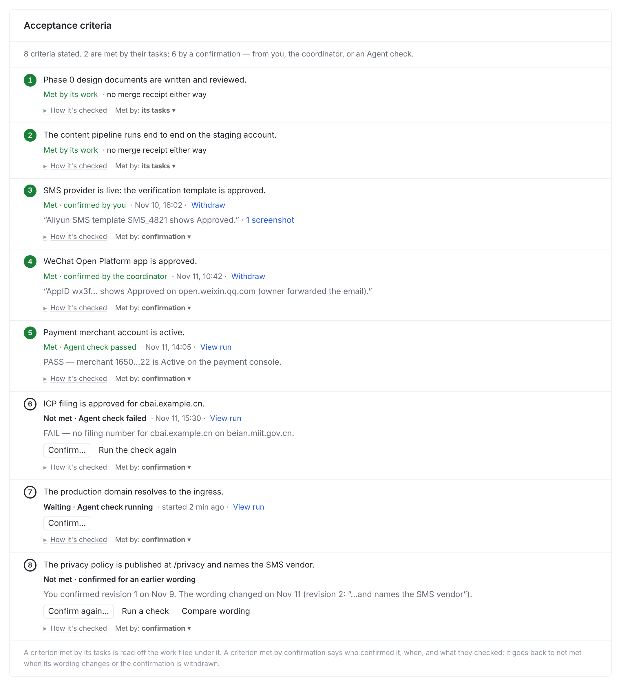

3
Operators can review and publish a generated asset.
Met by its work



| 确认来源 | 算满足？ | 行上写 | 谁能撤 |
|---|---|---|---|
| 你 | 是 | by you · 时间 · note · 截图 | 你 |
| 协调者（MCP） | 是 | by the coordinator · 时间 · note | 你、协调者 |
| Agent 检查 PASS | 是 | Agent check passed · View run | 你（撤回 = 回到等确认） |
| Agent 检查 FAIL | 否 | Agent check failed · 结论 · View run | — |
| 检查进行中 | 否 | Checking… · View run | — |
| 判据文字修订 | 否（过期） | confirmed for an earlier wording | — |
| 由任务满足的判据 | 不变：NO_WORK_SERVES_IT 等规则照旧；不显示 Confirm… | ||